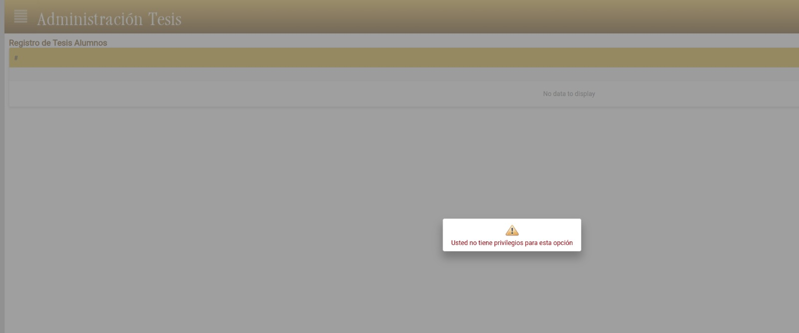

<!DOCTYPE html>
<html>
<head>
    
    <meta http-equiv="content-type" content="text/html; charset=UTF-8" />
    
        <script>
            L_NO_TOUCH = false;
            L_DISABLE_3D = false;
        </script>
    
    <style>html, body {width: 100%;height: 100%;margin: 0;padding: 0;}</style>
    <style>#map {position:absolute;top:0;bottom:0;right:0;left:0;}</style>
    <script src="https://cdn.jsdelivr.net/npm/leaflet@1.9.3/dist/leaflet.js"></script>
    <script src="https://code.jquery.com/jquery-1.12.4.min.js"></script>
    <script src="https://cdn.jsdelivr.net/npm/bootstrap@5.2.2/dist/js/bootstrap.bundle.min.js"></script>
    <script src="https://cdnjs.cloudflare.com/ajax/libs/Leaflet.awesome-markers/2.0.2/leaflet.awesome-markers.js"></script>
    <link rel="stylesheet" href="https://cdn.jsdelivr.net/npm/leaflet@1.9.3/dist/leaflet.css"/>
    <link rel="stylesheet" href="https://cdn.jsdelivr.net/npm/bootstrap@5.2.2/dist/css/bootstrap.min.css"/>
    <link rel="stylesheet" href="https://netdna.bootstrapcdn.com/bootstrap/3.0.0/css/bootstrap.min.css"/>
    <link rel="stylesheet" href="https://cdn.jsdelivr.net/npm/@fortawesome/fontawesome-free@6.2.0/css/all.min.css"/>
    <link rel="stylesheet" href="https://cdnjs.cloudflare.com/ajax/libs/Leaflet.awesome-markers/2.0.2/leaflet.awesome-markers.css"/>
    <link rel="stylesheet" href="https://cdn.jsdelivr.net/gh/python-visualization/folium/folium/templates/leaflet.awesome.rotate.min.css"/>
    
            <meta name="viewport" content="width=device-width,
                initial-scale=1.0, maximum-scale=1.0, user-scalable=no" />
            <style>
                #map_c36f5677f94f638c74bc8601364747e5 {
                    position: relative;
                    width: 100.0%;
                    height: 100.0%;
                    left: 0.0%;
                    top: 0.0%;
                }
                .leaflet-container { font-size: 1rem; }
            </style>
        
    <script src="https://cdnjs.cloudflare.com/ajax/libs/leaflet.fullscreen/1.4.2/Control.FullScreen.min.js"></script>
    <link rel="stylesheet" href="https://cdnjs.cloudflare.com/ajax/libs/leaflet.fullscreen/1.4.2/Control.FullScreen.min.css"/>
    <script src="https://cdnjs.cloudflare.com/ajax/libs/leaflet.draw/1.0.2/leaflet.draw.js"></script>
    <link rel="stylesheet" href="https://cdnjs.cloudflare.com/ajax/libs/leaflet.draw/1.0.2/leaflet.draw.css"/>
    <script src="https://cdn.jsdelivr.net/gh/ljagis/leaflet-measure@2.1.7/dist/leaflet-measure.min.js"></script>
    <link rel="stylesheet" href="https://cdn.jsdelivr.net/gh/ljagis/leaflet-measure@2.1.7/dist/leaflet-measure.min.css"/>
    <script src="https://unpkg.com/leaflet-control-geocoder/dist/Control.Geocoder.js"></script>
    <link rel="stylesheet" href="https://unpkg.com/leaflet-control-geocoder/dist/Control.Geocoder.css"/>
</head>
<body>
    
    
            <div class="folium-map" id="map_c36f5677f94f638c74bc8601364747e5" ></div>
        
</body>
<script>
    
    
            var map_c36f5677f94f638c74bc8601364747e5 = L.map(
                "map_c36f5677f94f638c74bc8601364747e5",
                {
                    center: [-39.83, -73.3],
                    crs: L.CRS.EPSG3857,
                    zoom: 11,
                    zoomControl: true,
                    preferCanvas: false,
                    drawExport: false,
                    layersControl: true,
                }
            );
            L.control.scale().addTo(map_c36f5677f94f638c74bc8601364747e5);

            

        
    
            var tile_layer_34e63267b693acc3468622fd9028a632 = L.tileLayer(
                "https://{s}.tile.openstreetmap.org/{z}/{x}/{y}.png",
                {"attribution": "Data by \u0026copy; \u003ca target=\"_blank\" href=\"http://openstreetmap.org\"\u003eOpenStreetMap\u003c/a\u003e, under \u003ca target=\"_blank\" href=\"http://www.openstreetmap.org/copyright\"\u003eODbL\u003c/a\u003e.", "detectRetina": false, "maxNativeZoom": 24, "maxZoom": 24, "minZoom": 0, "noWrap": false, "opacity": 1, "subdomains": "abc", "tms": false}
            ).addTo(map_c36f5677f94f638c74bc8601364747e5);
        
    
            L.control.fullscreen(
                {"forceSeparateButton": false, "position": "topleft", "title": "Full Screen", "titleCancel": "Exit Full Screen"}
            ).addTo(map_c36f5677f94f638c74bc8601364747e5);
        
    
            var options = {
              position: "topleft",
              draw: {},
              edit: {},
            }
            // FeatureGroup is to store editable layers.
            var drawnItems = new L.featureGroup().addTo(
                map_c36f5677f94f638c74bc8601364747e5
            );
            options.edit.featureGroup = drawnItems;
            var draw_control_7b4422847726146601339270fd57f3fd = new L.Control.Draw(
                options
            ).addTo( map_c36f5677f94f638c74bc8601364747e5 );
            map_c36f5677f94f638c74bc8601364747e5.on(L.Draw.Event.CREATED, function(e) {
                var layer = e.layer,
                    type = e.layerType;
                var coords = JSON.stringify(layer.toGeoJSON());
                layer.on('click', function() {
                    alert(coords);
                    console.log(coords);
                });
                drawnItems.addLayer(layer);
             });
            map_c36f5677f94f638c74bc8601364747e5.on('draw:created', function(e) {
                drawnItems.addLayer(e.layer);
            });
            
        
    
            var measure_control_db242b3d8e9242c3d8636967692a9fec = new L.Control.Measure(
                {"position": "bottomleft", "primaryAreaUnit": "sqmeters", "primaryLengthUnit": "meters", "secondaryAreaUnit": "acres", "secondaryLengthUnit": "miles"});
            map_c36f5677f94f638c74bc8601364747e5.addControl(measure_control_db242b3d8e9242c3d8636967692a9fec);

        
    
            L.Control.geocoder(
                {"collapsed": true, "defaultMarkGeocode": true, "position": "topleft"}
            ).on('markgeocode', function(e) {
                map_c36f5677f94f638c74bc8601364747e5.setView(e.geocode.center, 11);
            }).addTo(map_c36f5677f94f638c74bc8601364747e5);

        
    
            map_c36f5677f94f638c74bc8601364747e5.fitBounds(
                [[-39.83, -73.3], [-39.83, -73.3]],
                {"maxZoom": 11}
            );
        
    
            var tile_layer_2b1eeae8ed0a57d66de328fb5425c060 = L.tileLayer(
                "https://server.arcgisonline.com/ArcGIS/rest/services/World_Imagery/MapServer/tile/{z}/{y}/{x}",
                {"attribution": "Tiles (C) Esri -- Source: Esri, i-cubed, USDA, USGS, AEX, GeoEye, Getmapping, Aerogrid, IGN, IGP, UPR-EGP, and the GIS User Community", "detectRetina": false, "maxNativeZoom": 22, "maxZoom": 22, "minZoom": 0, "noWrap": false, "opacity": 1, "subdomains": "abc", "tms": false}
            ).addTo(map_c36f5677f94f638c74bc8601364747e5);
        
    
            var marker_c092ef163e65310204c3baceed9325ca = L.marker(
                [-39.867, -73.396],
                {}
            ).addTo(map_c36f5677f94f638c74bc8601364747e5);
        
    
        var popup_daabd783c4b9ef833eba9a10e6c1999a = L.popup({"maxWidth": "100%"});

        
            
                var html_2a408ed55150dc1e919f200326becb80 = $(`<div id="html_2a408ed55150dc1e919f200326becb80" style="width: 100.0%; height: 100.0%;">     <h4>Fuerte Niebla</h4>          </div>`)[0];
                popup_daabd783c4b9ef833eba9a10e6c1999a.setContent(html_2a408ed55150dc1e919f200326becb80);
            
        

        marker_c092ef163e65310204c3baceed9325ca.bindPopup(popup_daabd783c4b9ef833eba9a10e6c1999a)
        ;

        
    
    
            var marker_24b7b78e7b495bc7f7d96e3f9dca5cb9 = L.marker(
                [-39.883, -73.428],
                {}
            ).addTo(map_c36f5677f94f638c74bc8601364747e5);
        
    
        var popup_58896afc1965830b86cdd26d3a061152 = L.popup({"maxWidth": "100%"});

        
            
                var html_7df00a35b78f2451da856717d4deae49 = $(`<div id="html_7df00a35b78f2451da856717d4deae49" style="width: 100.0%; height: 100.0%;">     <h4>Castillo de Corral</h4>          </div>`)[0];
                popup_58896afc1965830b86cdd26d3a061152.setContent(html_7df00a35b78f2451da856717d4deae49);
            
        

        marker_24b7b78e7b495bc7f7d96e3f9dca5cb9.bindPopup(popup_58896afc1965830b86cdd26d3a061152)
        ;

        
    
    
            var marker_00ed47e909ad91f4ae98cb641e9ec8b1 = L.marker(
                [-39.817, -73.245],
                {}
            ).addTo(map_c36f5677f94f638c74bc8601364747e5);
        
    
        var popup_6adb02e0d78ede9f3687a179970876e0 = L.popup({"maxWidth": "100%"});

        
            
                var html_52809a2f093893e985537c88f3854970 = $(`<div id="html_52809a2f093893e985537c88f3854970" style="width: 100.0%; height: 100.0%;">     <h4>Museo Histórico y Antropológico</h4>          </div>`)[0];
                popup_6adb02e0d78ede9f3687a179970876e0.setContent(html_52809a2f093893e985537c88f3854970);
            
        

        marker_00ed47e909ad91f4ae98cb641e9ec8b1.bindPopup(popup_6adb02e0d78ede9f3687a179970876e0)
        ;

        
    
    
            var layer_control_8c173936e2eae52d7c82bcfe45bde74c = {
                base_layers : {
                    "openstreetmap" : tile_layer_34e63267b693acc3468622fd9028a632,
                },
                overlays :  {
                    "Esri.WorldImagery" : tile_layer_2b1eeae8ed0a57d66de328fb5425c060,
                },
            };
            L.control.layers(
                layer_control_8c173936e2eae52d7c82bcfe45bde74c.base_layers,
                layer_control_8c173936e2eae52d7c82bcfe45bde74c.overlays,
                {"autoZIndex": true, "collapsed": true, "position": "topright"}
            ).addTo(map_c36f5677f94f638c74bc8601364747e5);
        
</script>
</html>